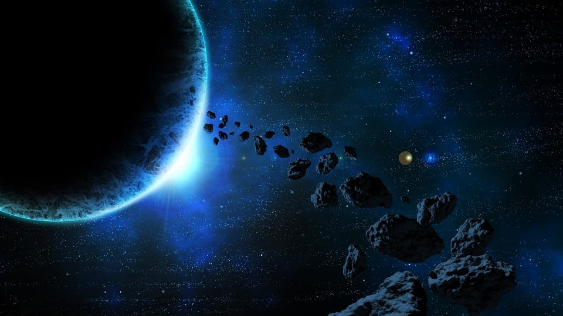
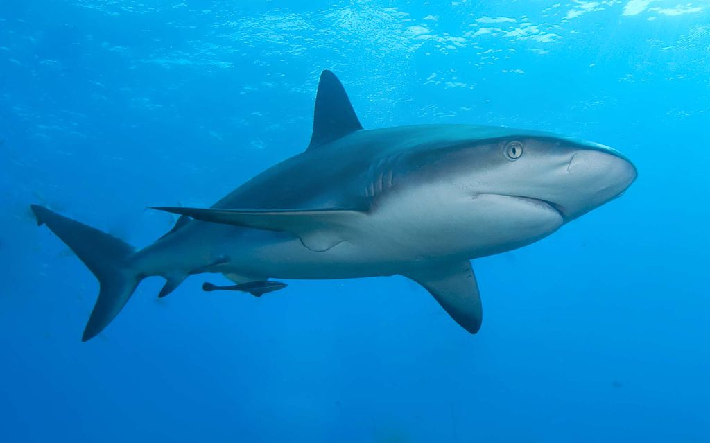

Proposal

For our Image, we want to show the beauty of space with an Astronaut that the world has never seen before. There will be some objects floating around in space that do not belong there.

As things like Asteroids are typically floating around in Space, we plan to add something like this to our image. And this is a perfect entry point to develop some procedurally generated objects.

Of course the image would not be complete without an actual Astronaut. To fit the theme of the course, we wanted to put a reef shark into the scene.
Features
Eric Enzler
- [15] Disney BSDF
- [15] Homogeneous Participating Media
- [15] Advanced Camera model
- [5] Procedural Volumes
- [5] Simple Extra Emitters
- [5] Motion Blur for arbitrary Objects
Gianluca Moro
- One
- Two
- Three